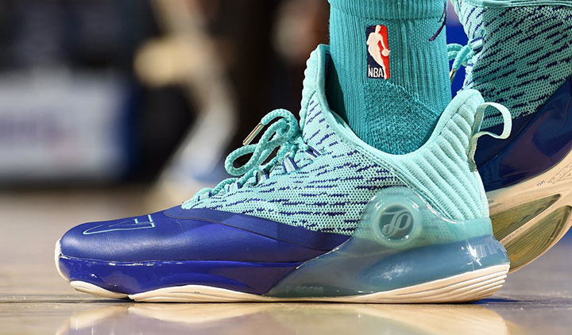

GIAYBONGRO.COM

Giày bóng rổ
Là những dòng giày chuyên sử dụng trong bộ môn bóng rổ, với những công nghệ, bộ đệm và đế đặc biệt hỗ trợ trong các động tác đặc biết với bóng rổ. Bộ đế thường được làm dày với các vân đế hỗ trợ di chuyển linh hoạt và các bước phanh, bộ đệm cũng thường được cải thiện nhằm giảm chấn khi tiếp đất và tăng độ thoải mái
Vì sao cần giày bóng rổ
Tránh gây chấn thương: Khi tham gia bộ môn thể thao này, người chơi cần phải thực hiện nhiều động tác khó: chạy, dừng đột ngột, tạt ngang, bật nhảy, thay đổi hướng .... Nếu không cẩn thận, người chơi dễ gặp chấn thương ở phần cổ chân, mắt cá chân. Một đôi giày tốt, chơi bóng rổ chuyên dụng sẽ giúp bạn tránh những vấn đề này tối đa đồng thời bảo vệ đôi chân của bạn tốt hơn. Độ bền cao: Vì thường xuyên phải di chuyển với cường độ mạnh, nên dùng giày bình thường sẽ dễ hư hỏng. Giày thể thao thiết kế riêng để chơi bóng rổ được làm từ chất vải tốt, phù hợp với những động tác khi chơi bóng, nên độ bền cao, giúp bạn tiết kiệm chi phí mua giày mới. Cải thiện kỹ năng, nâng cao trình độ: Đôi giày chơi bóng rổ thường có trọng lượng nặng hơn những đôi giày thông thường nên cơ chân và hệ thống hô hấp của người chơi sẽ phải hoạt động tích cực hơn. Nhờ vậy, thể lực của người chơi sẽ được cải thiện đáng kể. Bên cạnh đó, giày được thiết kế chuyên dụng, đảm bảo người chơi có thể di chuyển linh hoạt, thực hiện những cú xoay người, tạt ngang hay những động tác ném bóng, chuyền bóng hiệu quả hơn, cơ hội ghi điểm cao hơn. Mang lại sự thoải mái trong suốt quá trình chơi, luyện tập, thi đấu: Giày bóng rổ thường có thiết kế nhiều lớp đệm, tạo cảm giác êm chân khi đi. Chất vải của giày cũng rất tốt, có khả năng thấm hút mồ hôi hiệu quả, mang lại sự thoải mái cho người chơi.Tiêu chí chọn giày
1. Chọn giày phù hợp size bàn chân2. Chọn giày phù hợp với sợ thích bản thân
3. Chọn giày phù hợp với mặt sân
4. Chọn giày phù hợp với lối chơi
5. Chọn giày phù hợp với vị trí